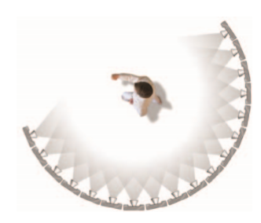

Its the process of insertion of computer graphics into live-action footage.
Ever since we were thrilled by the jaw-hanging spectacle of a camera flying around a suspended animation of Keanu Reeves in The Matrix, bullet time shots have become a permanent entry in the lexicon of visual effects
Created by aviik.